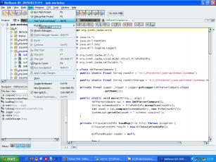
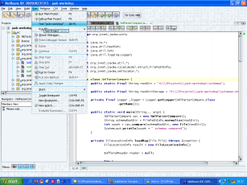
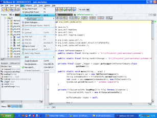
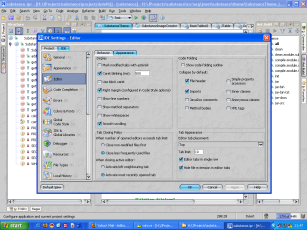
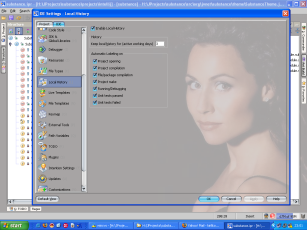
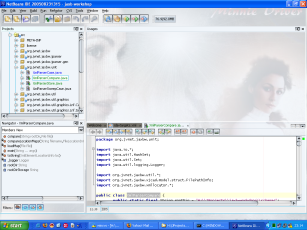
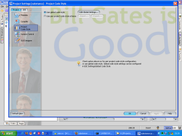
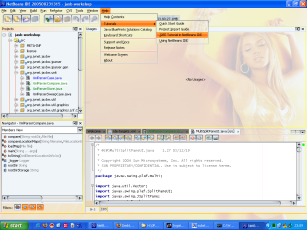

For me it all started with one of the first versions of ACDSee that provided watermark
drawings on its toolbar. But lately, I have seen a couple of screenshots of JEdit, and a
thought hit me:


Why only for the class editor? Why not for the whole application? And why not make it
available for any Java application? So, the beta of the upcoming
Substance look-and-feel release 2.0 provides
the watermarking support (the only one besides SLAF
as far as i know).
First of all, you are welcome to try it out for yourself with
WebStart test application
(or by downloading the runnable
jar). And here is how the out-of-the-box watermarks look like (click on each screenshot
to see large screenshot):



Notice how the watermarks (the first one is simple stripes, the second one is Matrix-inspired
Katakana glyphs and the last one is foam bubbles) are stamped on almost everything (including
toolbar and menus) without getting in the way. For the Eclipse warheads, here is an IntelliJ
IDEA screenshot:

But it doesn't end here. Using a custom watermark (which is quite easy to implement), you
can turn your favourite Swing-based IDE to a unique opportunity to see your favourite
actress all day long :)


Don't let your wife catch you, but once she does, simply point out that you are working.
For all the open-source slashdot hippies, you can even go a step further, but don't let Linus
catch you:

In addition, the watermark image may come not only from local filesystem, but from the Web
as well (added as requested in the comments). The image below is NetBeans in Sunset
theme with watermark of Beyonce image (that matches the theme colors). The command to run
NetBeans is H:\netbeans-4.2dev\bin\netbeans.exe -cp:p h:\jprojects\substance\drop\substance.jar
-laf org.jvnet.substance.SubstanceLookAndFeel -J-Dsubstancelaf.theme=org.jvnet.substance.theme.SubstanceSunsetTheme
-J-Dsubstancelaf.watermark=org.jvnet.substance.watermark.SubstanceImageWatermark
-J-Dsubstancelaf.watermark.image=http://69.93.50.122/desktopgirls/photos/Beyonce_Knowles_810200245513PM959.jpg
